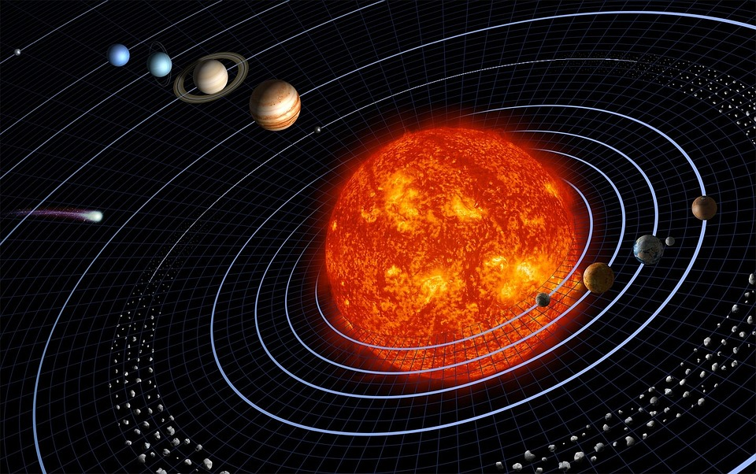

What You Should Know
Spinning Earth
If you zoom in really far to see a star in Stellarium, you might notice that it quickly moves out of view. In fact, all stars are steadily moving across the sky together. The celestial sphere seems to be rotating around you, but what is really happening is that the Earth is doing the rotating! As the Earth spins, you and the planet are being moved into different areas of space. One full Earth rotation is equal to one full day (24 hours).

Tilted Earth
As the Earth rotates, it is also tilted on its axis. This means its north and south poles are not straight up and down compared to its orbit around the Sun.
The tilt causes the Sun to shine more on either the planet's northern or southern half, or hemisphere, at different times of the year. This is why we have seasons and why it is hot in one hemisphere when it is cold in the other. For example, summer in North America is at the same time as winter in South America.
Solar System Motions
The great distances between us and the stars make them appear to rotate across the sky together. But other planets in our own solar system are much closer. Like the Earth, they also orbit around the Sun.
The Earth's spin causes these planets to move across the sky like rest of the celestial objects. They also have their own additional "wandering" motion across the sky caused by their orbit. This added motion is noticed over many nights of observing. The word planet comes from the ancient Greek word meaning "wanderer." Thinking about it this way reminds us how a planet's motion is different from the rest of the stars.
The Moon appears to move differently than both the stars and other planets because it is the closest object to Earth and orbits directly around it.